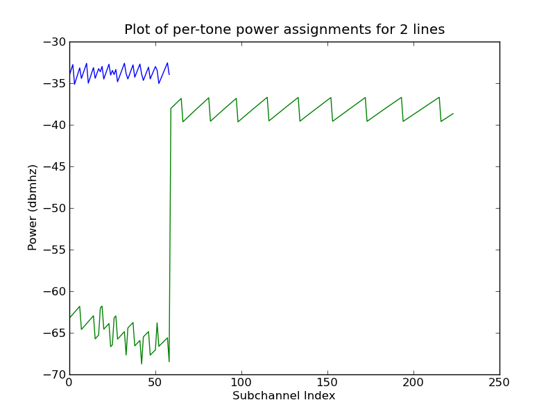
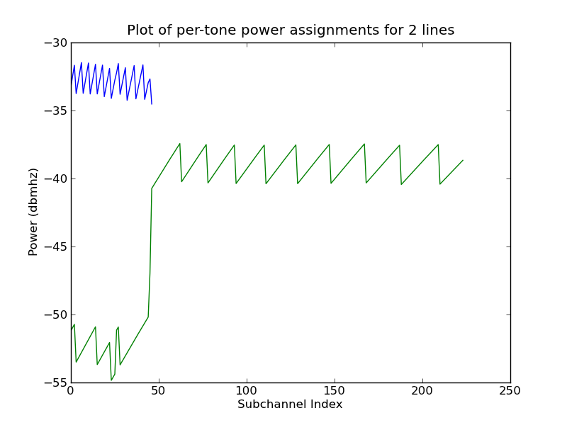
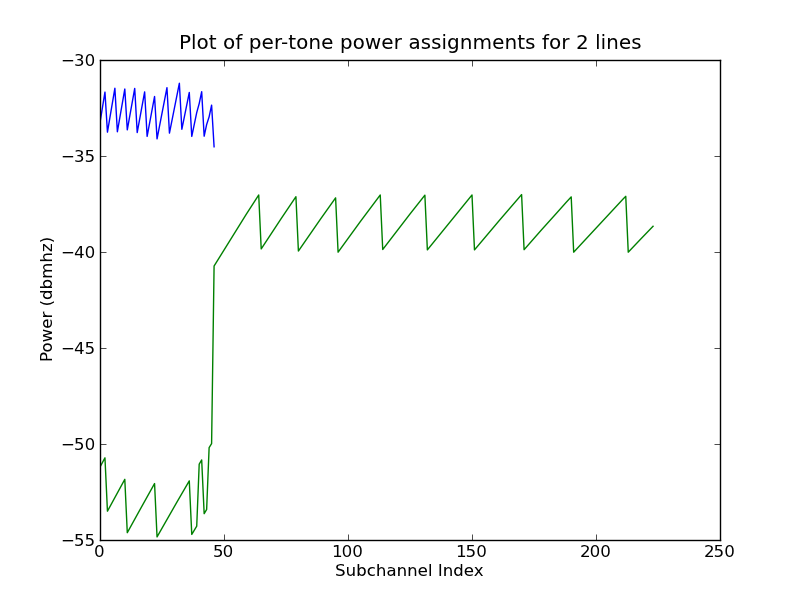
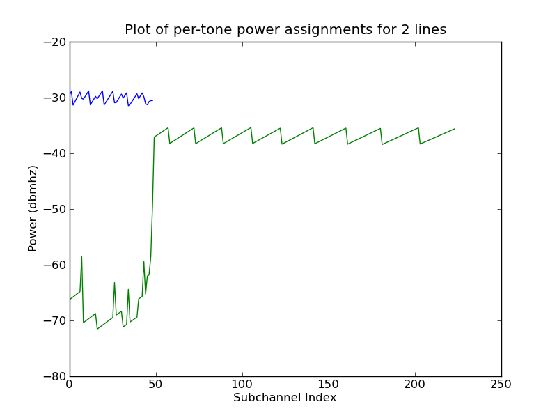
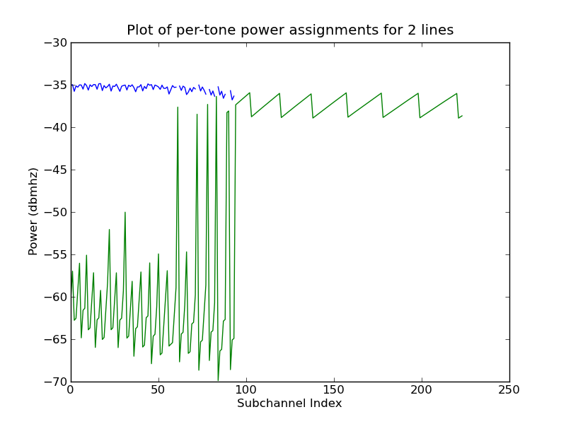
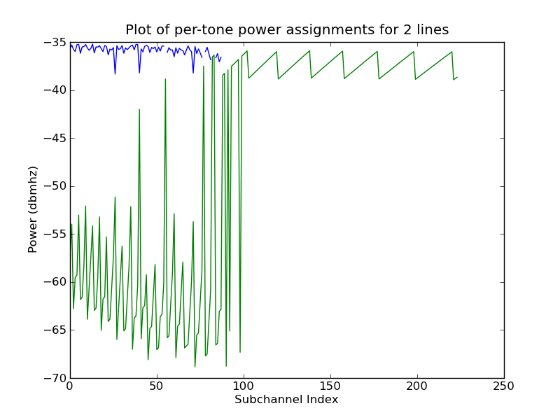

Next: GPU-bound Algorithm Development Up: Development and Solution Previous: Simulation Framework Architecture Contents
Since OSB is the 'simplest' DSM algorithm, it was implemented first (without per line rate targeting3.6, but with PSD caching), largely from the work covered in Alastair McKinley (2009), with operation as stated previously. Due to Python's efficient syntax and the functionality available in the Numpy math library, this was a fairly straightforward task in terms of implementing mathematical formulae in a structured way, but with commonly neglected areas such as algorithmic convergence and numerous boundary cases that are not covered in any of the technical papers cited, this was a process of iterative 'run it; it breaks; find new edge case; implement edge case; repeat'. Such edge cases range from ensuring that while PSD's can have negative values, that a negative PSD value indicates a 'failed' bit-load3.7 to ensuring that assigned line Lagrangian co-factor bisection did not reduce factors to infinitesimal values given very different line sections.
The in this case, the generation of power spectral density values for each attempted bit combination is accomplished using the Numpy linear algebra library. This development and implementation was carried out in parallel with the generation of the general simulation framework. This joint development allowed for very early-stage verification of the work currently applied, specifically verification of cross-talk matrices and subsequent bit-loads against values derived from Alastair McKinley (2009) and R. Cendrillon (2004).
The development of the line and bundle objects, as well as the general framework structure, allowing for programmatic 'hooks' for objects (classes) for different algorithms, automatic generation of post-bit-loading graph data represents more than half of the development time applied to the project3.8.
Verification of the OSB algorithm was done in a similar way to the verification of the gain-matrix generation; comparison with known-good results. In this case this takes the form of analysing the resultant PSD and bit assignments for the lines graphically, as shown in Figure 34. While these do not match each other perfectly, this can be explained by two factors;propagated floating point representation differences, and updated beta-offset implementations. The McKinley implementation was built on a 32-bit floating point representation system, while the presented implementation leverages Numpy's support for 64-bit floating point values. Additionally the selected beta-offset model application in the bundle differs from the McKinley implementation in that in the McKinley model, random beta offset values are applied to the lines sequentially where in this implementation, an offset matrix is applied globally to the bundle using Numpy functionality. Given the inherent numerical instability of the calculation of the Lagrangian sum, fractional changes in cross-talk gains can significantly affect the final resultant bit-loading assignments, while maintaining a close rate-approximation between the two implementations.
|
[McKinley PSD] [Implementation PSD] |
After OSB was implemented, verified and their operation confirmed by Dr McKinley, Greedy bit-loading (MIPB) with rate targets was developed from Alastair McKinley (2009). One modification that was made to MIPB as in Alastair McKinley (2009) was the introduction of a modified line weight updating algorithm that used the ratio-to-target rather than distance-to-target as a weight-shifting factor, giving on average half the number of iterations while maintaining expected bit-loads.3.9
An implementation of ISB soon followed, and verified in the same manner. One particular additional version was made of the ISB algorithm in preparation for GPU parallelisation; loop reversal of the inner optimisation step. 'Classic' ISB iterates over each line individually, internally repeating bit incrementing steps until bit-load convergence is achieved, shown in Figure 35. An alternative but equivalent loop construct is to do the per-channel incrementing inside a global bit-convergence loop, as shown in Figure 36. This manipulation is safe since each channel is ideally independent to the power conditions of other tones.
As part of second-stage verification and re-factoring, significant functional portions of OSB and ISB were moved into the Algorithm super-class, such as lambda bisection and rate metric functions, since both algorithms do largely the same thing within the outer loops of the implementation. Since the only differences between the two algorithms is their inner optimisation function, these are included in this document as Appendices B and C.
For completeness, figure 37 and 38 show like for like comparison of bit load and power spectra between this solution and the McKinley implementation given a standard two line near-far scenario (as shown in 3a)3.10
|
[McKinley PSD] [Implementation PSD] |
|
[McKinley PSD] [Implementation PSD] |
Andrew Bolster 2011-05-22